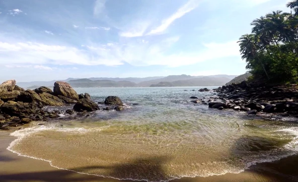

¡Sí! Otra vez en Brasil, mi segunda casa. Una nueva escapada al país vecino me proporcionaba una nueva posibilidad de seguir conociendo playas, pero esta vez, me hacia mucha ilusión realizar un nuevo tipo de viaje.
La idea era sencilla, salir del área de confort y realizar un viaje buscando aventura y contacto con la naturaleza. Estaba decidido ¡Nos ibamos de camping! ¿Con quién? Claro, con la famosa chica de la ducha que ya llevábamos casi un año conociéndonos. Para los que todavía no saben, en mi paso por Ilha Grande conocí a una chica brasileña en la ducha del Biergarten Hostel. Sí, en la ducha, y casi un año después, y con muchas aventuras en nuestras espaldas nos encontrábamos yendo a la famosa playa de surfers, Maresías, para luego conocer la paradisíaca Ilha Das Couves.
Suerte es lo que nunca tenemos. Siempre que habíamos realizado algún viaje con la chica de la ducha algo extraño sucedía. No fue la excepción. El día anterior a viajar a Maresías nos llamaron del departamento que habíamos reservado diciéndonos que era inaccesible el camino al hospedaje debido a las fuertes lluvias, después de que nuestros corazones se pararon y pensamos que nos habíamos quedamos sin techo, la mujer, muy considerada, nos dijo que podíamos ir a un hotel sin pagar un peso más. Aceptamos, no teníamos opción. Al llegar entendimos que por primera vez habíamos tenido una desgracia con suerte, el hotel Pousada Dos Condes era maravilloso, contaba con piscina, cine, habitaciones grandes y cómodas, una pasada.
La idea era sencilla, salir del área de confort y realizar un viaje buscando aventura y contacto con la naturaleza. Estaba decidido ¡Nos ibamos de camping! ¿Con quién? Claro, con la famosa chica de la ducha que ya llevábamos casi un año conociéndonos. Para los que todavía no saben, en mi paso por Ilha Grande conocí a una chica brasileña en la ducha del Biergarten Hostel. Sí, en la ducha, y casi un año después, y con muchas aventuras en nuestras espaldas nos encontrábamos yendo a la famosa playa de surfers, Maresías, para luego conocer la paradisíaca Ilha Das Couves.
Piscina de la Pousada Dos Condes.
Era bastante tarde cuando llegamos, y después de una cena en la habitación nos fuimos a dormir. El día siguiente amaneció nublado, los pronósticos del clima del fin de semana que ibamos a pasar no eran muy alentadores. Sin embargo, desayunamos y decidimos irnos para la playa. La playa del surf: Olas gigantes, mar movido y varios deportistas con sus tablas apuntando al infinito del mar. Para nadar es una playa pésima y el color de sus aguas tampoco es bueno. Sin embargo, la imponencia de una playa larga y grande junto a la fuerza de las olas, nos regalaron un paisaje especial más para observar que para cualquier otra cosa. Importante: Lean bien los carteles de señalización ya que las playas de esta costa tienen una corriente marina específica y bastante peligrosa donde hay algunos puntos que el mar chupa y otros que no.
Playa de la Pousada Dos Condes en Maresías, São Sebastião, São Paulo, Brasil.
Sentados en las reposeras que tiene el hotel en la playa nos llegó un mensaje de whats app que remarcaba la poca suerte que teníamos: El barquero que habíamos reservado para cruzar hasta la isla nos estaba diciendo que por condiciones severas del mar la travesía no se podría realizar ese mismo día. Nos comunicamos con la dueña de la isla, no queríamos perder el dinero, y ella nos brindó el contacto de otro barquero el que si nos podía llevar.
En ese momento, dudamos muchísimo ¿Por qué un barquero dice que no puede navegar y otro si? ¿Estabamos por hacer una locura? La realidad es que no, todo depende del tipo de embarcación. El primero tenía un barco pequeño y bajo y el nuevo barquero, el Puruca, uno alto y más apto para navegar en condiciones desfavorables.
Maresías, São Sebastião, São Paulo, Brasil.
El titulo no es con sarcasmo, en la Ilha Das Couves sentimos que teníamos una isla solo para nosotros, hasta dormimos en una carpa en el medio de la selva y frente al mar. Lo primero que es importantísimo aclarar es que esta isla no es la famosa Ilha Das Couves de Ubatuba. Hay muchísimos viajeros, me incluyo, que nos confundimos. Las islas tienen el mismo nombre y están a una distancia muy cercana. La Ilha Das Couves a la que fuimos, ubicada en São Sebastião, no aparece en las búsquedas de google. En cambio, la de Ubatuba si. Lo segundo que hay que aclarar, es que en la isla no se vende comida así que tenemos que llevarla nosotros mismos. Además, se cobran 10 reales para realizar acciones que estarían incluidas en cualquier hospedaje, por ejemplo, cocinar a gas o cargar el celular.
Playa única de Ilha Das Couves, São Sebastião, São Paulo, Brasil.
Para llegar es necesario realizar una travesía en barco que sale desde Barra do Sahy y su costo es de 50 reales por persona ida y vuelta (500 pesos argentinos aproximadamente). Nosotros viajamos con el Puruca (+55 12 99709-6491).
La realidad es que Ilha Das Couves es un área protegida bastante desconocida la cual fue otorgada por 99 años a una mujer brasileña llamada María y a su esposo, para su cuidado. A su vez, ellos pueden recibir visitantes y cobrar dinero por ello, pero siempre preservando el ambiente natural, es por eso, que no llegan a haber más de 12 o 13 personas en la isla al mismo tiempo. Para contactarse con ellos pueden pinchar AQUÍ, el precio cuando viajamos era de 50 reales por noche y por persona el para acampar con carpa propia (500 pesos argentinos aproximadamente).
Nosotros tuvimos bastante suerte y solo compartimos la estadía con 5 personas más. Imagínense, toda una isla para tan pocas personas, donde sobran recovecos para perderse y sentirse como Tom Hanks en el naufrágo. Eso sí, sin Wilson.
La isla me hizo replantearme el concepto de paz y tranquilidad. Es un lugar extremo donde si existen ruidos, pero puramente naturales, como los pájaros, las cigarras, los árboles, los bichos de luz y mi favorito, el mar. El islote solo cuenta con una pequeña playa ¡Pero que playa! Aguas cristalinas, arena semifina y vegetación. La misma fue construida a base de sudor y esfuerzo por el esposo de María. Él nos contó que demoró varios años en poder abrir paso entre las piedras ¿Cómo? Moviendo una por una.
En la isla también hay un muelle pintoresco y algunos caminos por la floresta que permiten perdernos e ir descubriendo la totalidad del lugar.
Travesía en barco yendo hacia la Ilha Das Couves, São Sebastião, São Paulo, Brasil.
Nuestra estadía, como de costumbre, comenzó complicada. El barco comandado por el "Puruca", un barquero "muito legal" que se animó a trasladarnos tras la negativa del primer barquero, se encontraba llegando a Ilha Das Couves, pero el problema era la situación del mar que imposibilitaba que accedamos a la isla mediante la playa principal. La alternativa: Subir por el muelle (que se encontraba a más de un metro y medio de altura) mientras las olas generaban un fuerte vaivén del barco. Tras unos momentos de nerviosismo y con bastante esfuerzo logramos subir por el muelle y comenzar a vivir la isla.
Claudir, un señor (más que señor, un personaje) de cabellera gris, muy servicial, nos explicó que en la isla el tiempo no pasa, es eterno. Y algo de razón tenía, como allá no hay luz eléctrica, a las 19hs ya es de noche y lo que sucede desde ahí hasta la hora de dormir es lentísimo. Pero en su contrapartida, las horas de luz, se pasan rapidísimas.
Una de esas noches, el mismo Claudir, después de unas cuantas cervezas de más, me dijo la frase que más necesitaba escuchar: «Yo no tengo ningún problema, problema es lo que no tiene solución». Ahí estaba, otra vez en un viaje lejos de casa y nuevamente las palabras de alguien que unas horas atrás era un completo desconocido me calmaban. A este viaje en particular había llegado después de 3 semanas haciendome estudios y con la incertidumbre de tener los resultados un día después de mi vuelta a Buenos Aires. La chica de la ducha, como siempre, acompañandome, y esas palabras del señor de cabellera gris me habían alentado todavía más. ¿Los resultados? ¡Dieron todos perfectos! Y de toda la ansiedad que pase sin lugar a duda que aprendí muchísimo.
Lo principal es el disfrute en la naturaleza y animarse a vivir en un estado de aventura, a armar la carpa en un lugar alejado, cocinar de noche y casi sin luz, perderse por los caminos de la selva y otras tantas cosas que se pueden hacer al aire libre. También hay excursiones de barco, por ejemplo "As Ilhas" que son unas playas cercanas totalmente desiertas. Nosotros, otra vez, no tuvimos mucha suerte y al visitarlas nos agarró una tormenta de esas que dan miedo y solo pudimos disfrutar unos 15 minutos de excursión.
Vista desde la carpa montada en la selva de Ilha Das Couves, São Sebastião, São Paulo, Brasil.
Había pocas personas y yo, como siempre, me encontraba reboloteando en el mar. La chica de la ducha estaba ubicada estratégicamente en un recoveco de la playa, sentada en la arena y observando al agua del mar que llegaba muy suavemente para cubrirle los muslos y volverse a ir. Al ver eso, inmediatamente decidí acompañarla y sentados ahí, con el mar acariciándolos, surgió un momento único de charla frente a una playa, valga la redundancia, también única.
En el mediodía del sábado decidimos perdernos un poco en la selva y tras caminar unos 10 minutos llegamos a uno de los bordes de la isla que se encontraba minado de rocas que frenaban la llegada del mar. La posterior caminata por las rocas nos hizo sentir que estábamos verdaderamente solos, ni una persona había alrededor y toda una isla para nosotros.
Acampamos en medio de un camino de selva y enfrente de él estaba el mar. De costado, había unas cuantas rocas que regalaban una de las mejores vistas de la isla. ¿Se imaginan desayunando y merendando ahí? Sinceramente más paz que esa no se puede pedir. Sin embargo, mi momento favorito y más mágico se dio en la primera noche, donde después de cenar en el área común nos dirigimos (atravesando la selva de noche con una especie de candelabro) hacia nuestro camping. Ahí destapamos unos vodkas que habíamos comprado antes de llegar a la isla y nos quedamos simplemente conversando en las rocas con un clima tropical nocturno hermosísimo y la luna alumbrándonos. La persona que quería en el lugar que quería ¿Qué más se puede pedir?
Vista desde "Las rocas" en Ilha Das Couves, São Sebastião, São Paulo, Brasil.